In this writing, I want to share how asking AI for a calculated column inside a Direct Lake fact table taught me where calculated objects are allowed to live in a composite model, and what the Power BI service demands before it agrees to refresh them.
The plan was deliberate. In my previous post I set up the Power BI Desktop Bridge loop, where an agent authors the on-disk TMDL and PBIR files and the open Desktop window reloads to show the result. This time I pointed that loop at a storage mode boundary. My directlake_import_composite model keeps the sales fact table in Direct Lake mode and the dimension tables in Import mode, and I asked the agent for two things on a new Insights page: a calculated table that references the fact table, and a calculated column inside the fact table. I kept the prompt loose on purpose, because I wanted to see the agent's design decisions rather than dictate them. The calculated table appeared. The calculated column appeared too, but not in the table I named.
1. One Direct Lake Fact Table, Four Import Dimensions
The model sits in my Contoso workspace, fed by a lakehouse. The sales fact table reads its Delta table through Direct Lake, and the date, product, store, and customer dimensions are Import tables loaded through the SQL analytics endpoint. This is the composite model pattern I first walked through in my hybrid semantic models post: the large fact table stays in the lake with no copy inside the model, while the smaller dimension tables are loaded into the model the classic way.
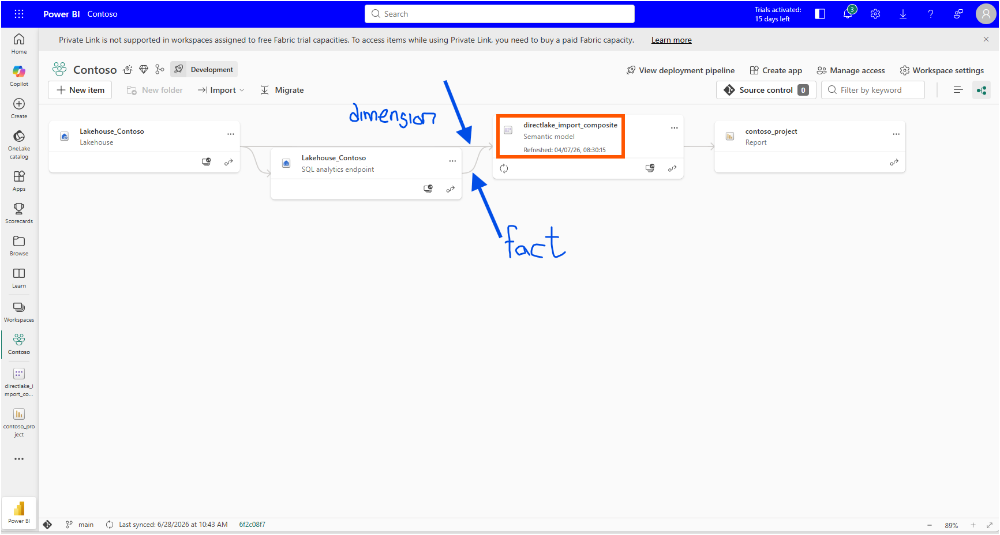
Direct Lake comes in two forms, and the difference decides everything in this post. The "Power Query connectors" section of the Microsoft Learn article Develop Direct Lake semantic models explains the quickest way to tell them apart: a Direct Lake on OneLake model uses the Azure Data Lake Storage connector in its shared expression, while a Direct Lake on SQL model uses the SQL Server connector. My expressions.tmdl leaves no doubt.
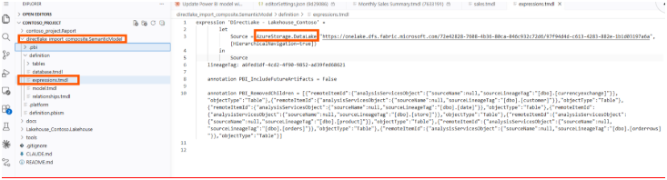
This is Direct Lake on OneLake. That matters because the "Comparison of storage modes" table in the Direct Lake overview marks composite models as supported only for the OneLake flavor. Only Direct Lake on OneLake allows Direct Lake tables and Import tables to live together in one semantic model. With Direct Lake on SQL, a model like mine, one Direct Lake fact table plus four Import dimensions, is not possible.
In Desktop, hovering over each table confirms the split. The sales table reports its storage mode as Direct Lake, and the dimensions report Import.
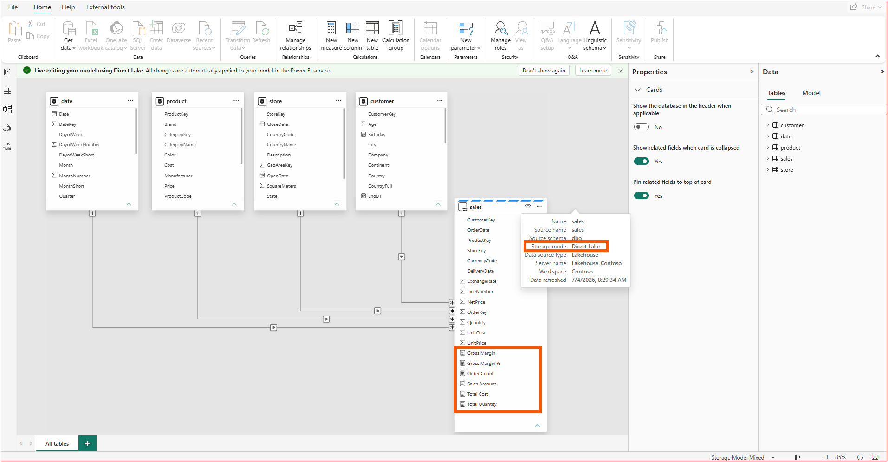
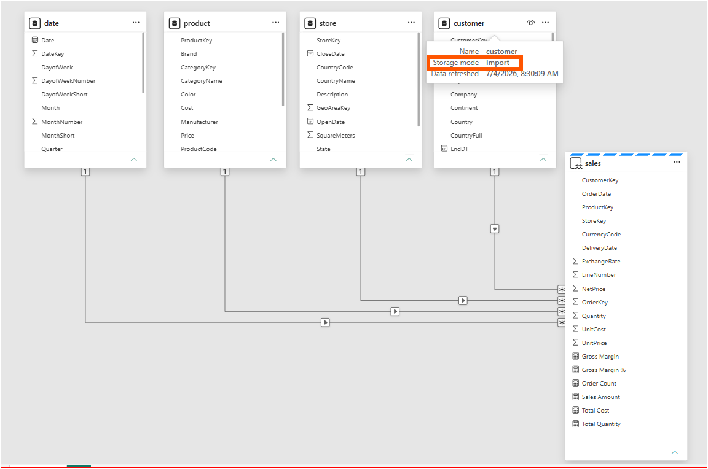
The report side already had a working Overview page from the Desktop Bridge experiment, so the model was live, queryable, and rendering before I asked for anything new.
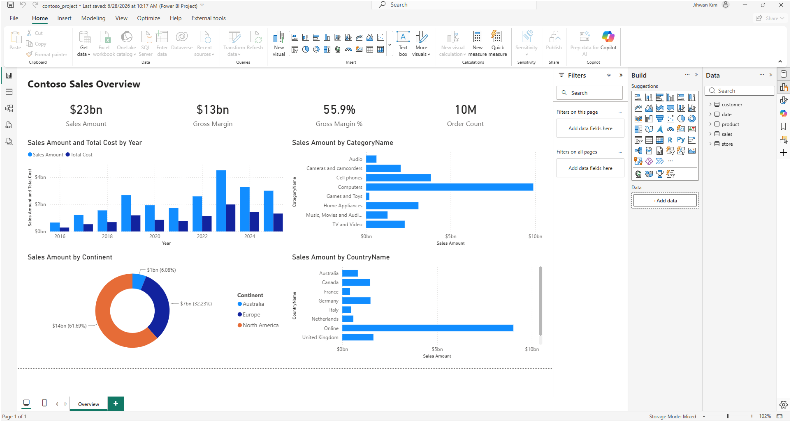
2. The Column That Landed in a Different Table
My instruction to the agent named the fact table twice. Referencing this fact table, create one calculated table that describes a new analytical insight on a new Insights page. Inside this fact table, create one calculated column that does the same. Two objects, one page, and the fact table as the anchor for both.
The agent delivered the page and both objects, and its placement told the story before any documentation did. The calculated table, Monthly Sales Summary, arrived as a disconnected table built from SUMMARIZECOLUMNS over the Import-mode date columns, reaching the fact table only through measures.
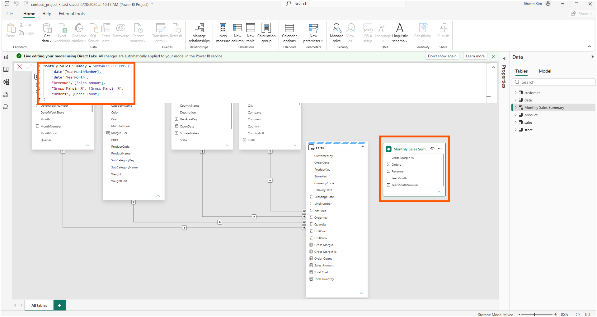
The calculated column, Margin Tier, did not go into sales at all. It went into the Import-mode product dimension, classifying each product by its list margin.
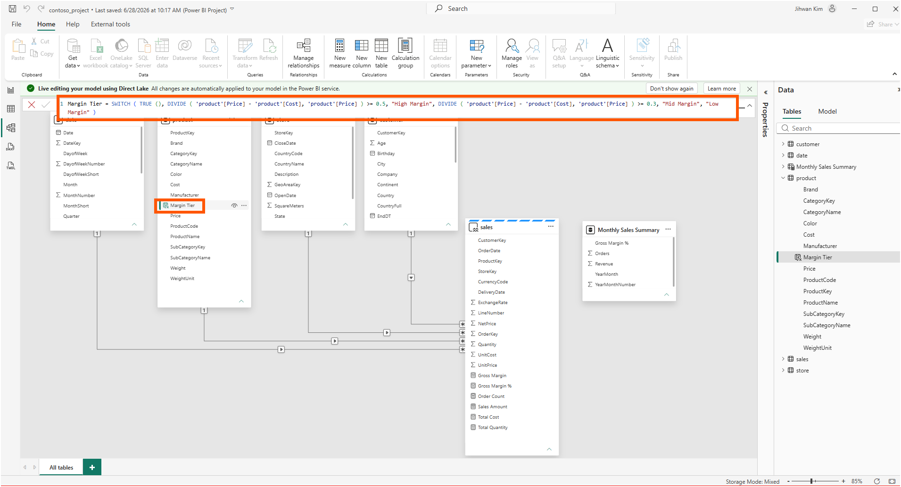
Both visuals rendered with data on the new page, so as an analytical outcome the request succeeded.
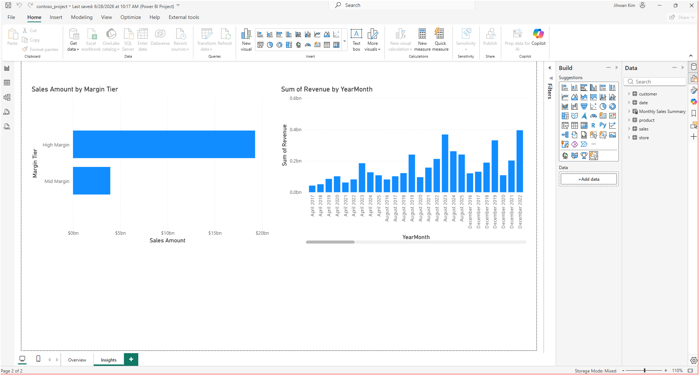
The agent's summary stated its reason plainly: "sales is Direct Lake, and Fabric forbids a calc column inside it or a calc table that references its columns, so I used the supported composite pattern: calc column on an import dimension, calc table via measures only." A one-line explanation from an agent is a claim, not a citation. I wanted to see the restriction with my own eyes, and then find where Microsoft documents it.
3. Checking for Myself: The Greyed-Out New Column
The Power BI service gave me the fastest confirmation. I opened the semantic model in web modeling, selected the sales table, and looked at the ribbon. New column was greyed out. The Properties pane at the same moment showed the reason for the difference between this table and its neighbors: storage mode, Direct Lake.
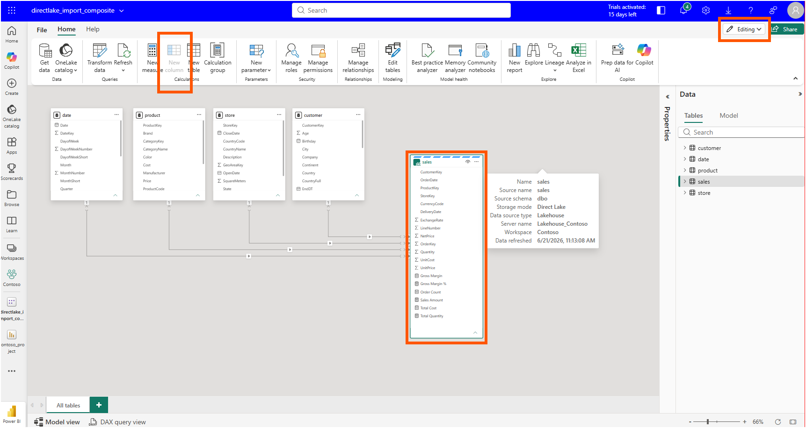
No error message, no tooltip explanation. The button simply is not available for this table. A UI that quietly disables a button is telling you something is documented somewhere, and that sent me to Microsoft Learn.
4. The Fine Print Behind the Word "Available"
I had read that calculated columns had come to Direct Lake. The Power BI April 2026 Feature Summary announced, in its "Direct Lake calculated columns and tables (Preview)" section, calculated columns and calculated tables for Direct Lake on OneLake as a preview rolling out to the service. Read quickly, that sounds like the restriction I had just watched the agent route around should no longer exist.
The precise answer sits in the "Comparison of storage modes" table of the Direct Lake overview. The calculated columns row for Direct Lake on OneLake does not say yes. It says "Yes (preview) – unmaterialized calculated columns with User Context Expression Context only." The "Considerations and limitations" table on the same page goes further, stating that there is "no feature parity between Import and Direct Lake as Standard Expression Context is not supported for Direct Lake calculated columns."
Here's the first aha moment that reshaped my understanding: the preview does not bring ordinary calculated columns to Direct Lake tables; it brings only the unmaterialized, user-context kind, and a standard calculated column still has to live somewhere else.
Margin Tier is as standard as a calculated column gets. It reads two physical columns of the same table and returns a static label. Nothing about it depends on who is looking at it, so the User Context Expression Context door does not apply, and the only supported homes for it in my model are the Import dimensions. The agent's placement was not a workaround. It was the documented design.
I wrote about the user-context kind in my user-context-aware calculated columns post, where the expressionContext: userContext property re-evaluates a column per user session. What I had not registered until this experiment is that this pattern is currently the only calculated column a Direct Lake table accepts.
The calculated table row of the comparison table reads differently. Calculated tables that reference Direct Lake columns or tables are marked "Yes (preview)" for Direct Lake on OneLake, and calculated tables that avoid referencing Direct Lake entirely are supported everywhere. Monthly Sales Summary groups by Import-mode date columns and touches sales only through three measures, so it lives comfortably inside the supported surface.
Comfortably, that is, until the service tried to refresh it.
5. The Refresh That Failed in the Service
The next scheduled refresh of the semantic model failed with a data source error I had not seen before.
"We cannot refresh this dataset because the dataset contains calculated tables or calculated columns referring to Direct Lake data source. Please configure the dataset to use an explicit connection with granular access control to access this data source and then try again."
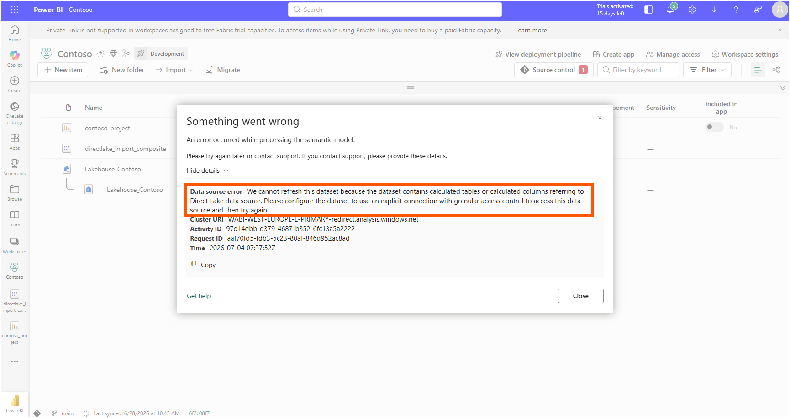
Two details in that sentence earned a second read. Of my two new objects, only one refers to the Direct Lake source at all. Margin Tier reads nothing but Import-mode product columns. The trigger is Monthly Sales Summary, and it never names a sales column directly. It reaches the fact table through [Sales Amount], [Gross Margin %], and [Order Count].
This was the second aha moment. A calculated table that touches a Direct Lake table only through measures still counts as referring to the Direct Lake data source, and that single reference changes the connection contract for the whole refresh.
The fix is what the error message asks for. By default, a Direct Lake model reads its source with single sign-on, using the identity of whoever queries it. The "Connection configuration" section of the Microsoft Learn article Integrate Direct Lake security describes the alternative: bind the model's data source to an explicit cloud connection, which carries a fixed identity instead of the default SSO behavior. In the semantic model settings, under Gateway and cloud connections, I mapped the AzureDataLakeStorage source pointing at OneLake from its default single sign-on entry to a named connection.
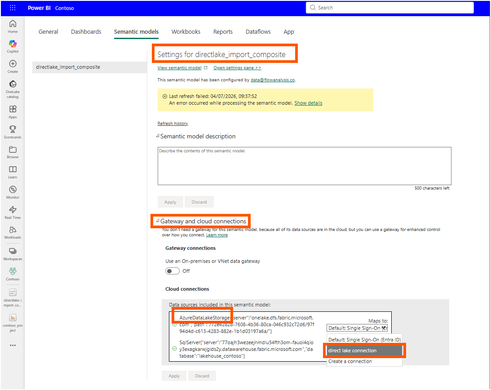
The connection itself is nothing exotic. Azure Data Lake Storage Gen2 against onelake.dfs.fabric.microsoft.com, OAuth 2.0 with my own account, and the Entra ID single sign-on checkbox left unticked so the fixed identity does the reading.
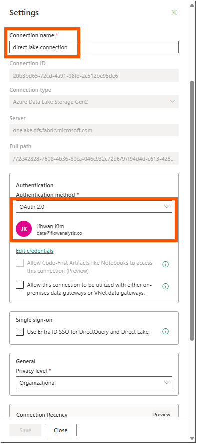
One more habit changed in Desktop along the way. After the calculated table was created, Desktop showed a banner saying one or more calculated tables need to be manually refreshed. In this composite arrangement the calculated table does not recalculate itself when the underlying Delta data moves, so a manual refresh becomes part of the editing rhythm. This is my observation from this session rather than a documented rule I can point to.
With the explicit connection in place, the refresh history told the ending. The failed run at 09:37 is followed by two completed runs.
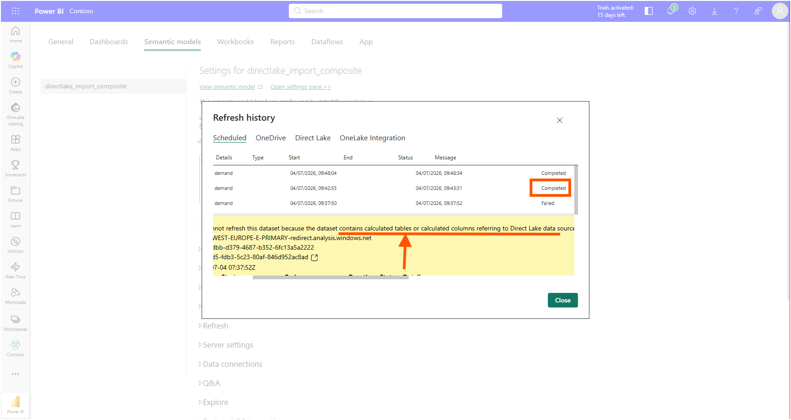
6. What the TMDL Diff Already Knew
Back on disk, the whole story is three partitions in three files. The fact table declares its Direct Lake nature in sales.tmdl.
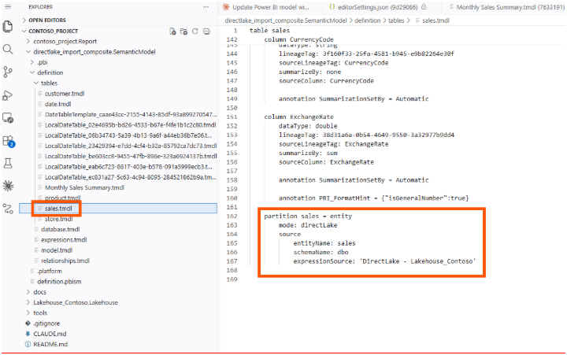
The calculated column lives in product.tmdl, an Import table, exactly where the comparison table says a standard calculated column belongs.
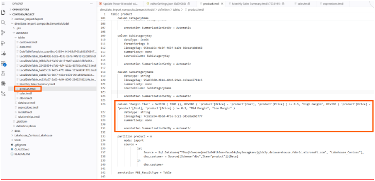
And the calculated table announces both of its identities at once in Monthly Sales Summary.tmdl: a calculated partition, materialized in Import mode, whose expression reaches the Direct Lake fact table through measures.
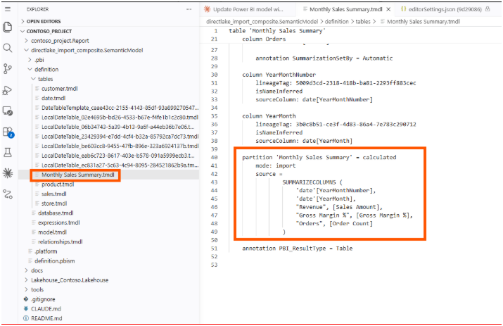
Everything the service showed me is readable here without opening a single dialog. Which table carries the new column, which mode the new table materializes in, and which partition still belongs to the lake.
7. From a DevOps Standpoint: Placement Is a Reviewable Decision
From a DevOps standpoint, this is foundational, because the constraint turns a modeling choice into something a pull request can catch.
Code Review
A calculated column is no longer just an expression to review. In a composite model, the file it lands in is an architectural decision. When the diff shows product.tmdl modified and sales.tmdl untouched, a reviewer who knows the storage modes can confirm the placement is deliberate and supported. A diff that tried to add a standard calculated column into a mode: directLake table is a red flag visible in review, before anyone waits for a deployment to fail.
Deployment and Configuration
The explicit cloud connection that unblocked my refresh lives in the service, not in the PBIP. Nothing in the Git repository records it. A teammate can clone this repository, deploy the identical model definition to another workspace, and hit the same refresh error I did, because the connection mapping is environment configuration that travels outside source control. My deployment notes now carry a line for it: any model whose calculated objects refer to a Direct Lake source needs its OneLake data source mapped to an explicit connection in every workspace it lands in.
Validation
The refresh history is the verification surface for this class of change. The calculated table renders in Desktop immediately after creation, and a reviewer approving the diff would see nothing wrong there. The failure only appears when the service refreshes the model. A post-deployment refresh check belongs in the pipeline for exactly this reason, and the manual-refresh behavior of the calculated table means data freshness for that one table deserves its own check as well.
A Note on Working with AI
The agent did more than follow instructions here. Given a loose prompt that named an unsupported placement, it routed the calculated column to a supported table and stated its reason in one line. That line was close to right, and slightly stronger than the documentation: calculated tables referencing Direct Lake columns are in preview for Direct Lake on OneLake, not forbidden outright, and the agent's measures-only design was more conservative than it strictly had to be.
The verification was mine. I checked the greyed-out ribbon in the service myself, hit the refresh error myself, and worked out the connection fix in the semantic model settings myself. Locating the documentation afterward was AI-assisted again: I asked where the restriction is written down, and the answer came back pointing at the "Comparison of storage modes" table. The agent proposed, I verified, and the documentation settled it.
Closing Thoughts
This experience left me with a new mental model: in a composite model, each table's storage mode decides what I can build on it. A Direct Lake table only reads data that already exists in the lakehouse, so a standard calculated column or a calculated table has to be created on the Import side of the model.
The same rule appeared three times in this experiment: the greyed-out New column button in the service, the calculated column that went into the product table instead of the sales table, and the refresh that asked for an explicit connection. Each one looked like a separate problem at first. After reading the "Comparison of storage modes" table in the Direct Lake overview, I understood that all three are the same rule about what a Direct Lake table can and cannot do.
I hope this helps having fun in exploring Direct Lake composite models, and embracing this new era where an agent's design decisions come with documentation you can check!